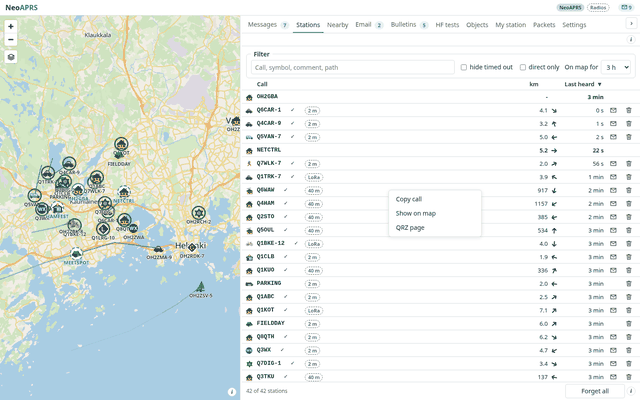
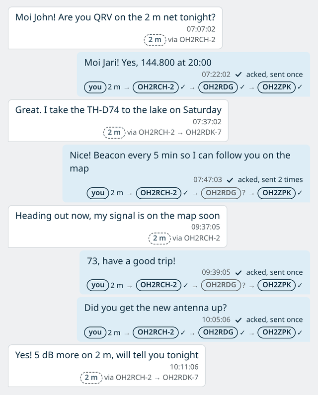
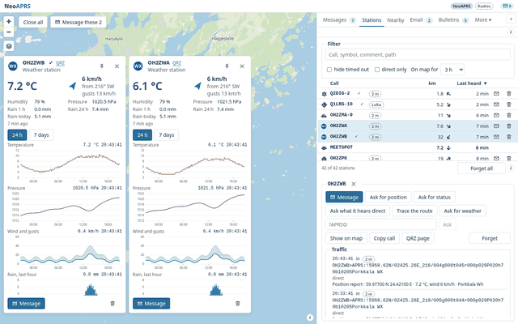
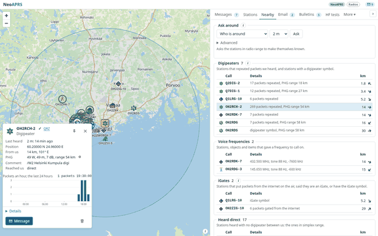
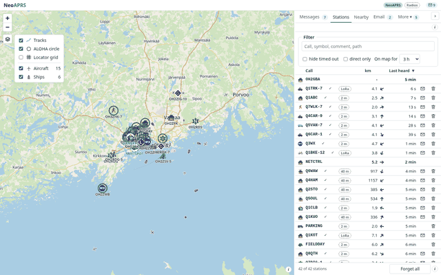
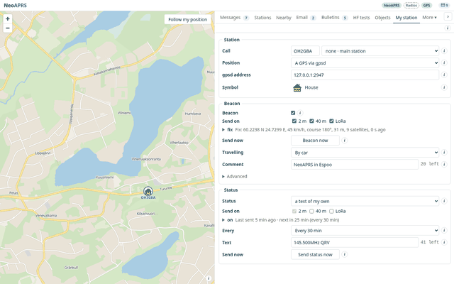
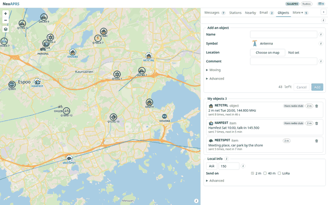
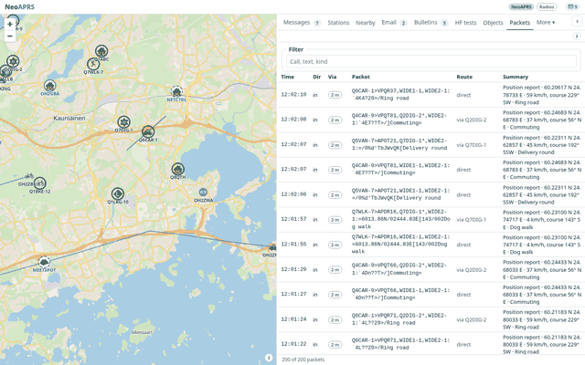
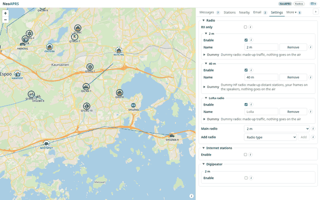
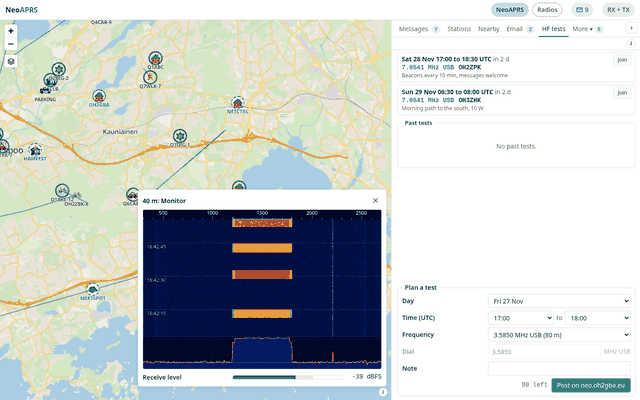

NeoAPRS
APRS client for Windows, macOS, Linux and the Raspberry Pi
See who is on the air around you, chat with other hams and know your message arrived. Use every radio you have at once. No internet needed, and it is free.

Download
- Download for WindowsNeoAPRS-Setup.exe · no administrator rights needed
- Open the downloaded file. If Windows says
Windows protected your PC
, choose More info, then Run anyway. - Go through the installer. On its last page, Open NeoAPRS now starts it. NeoAPRS asks for your call, your position and your radio. No radio at hand: choose a Dummy radio.
- Download for MacNeoAPRS-arm64.dmg · Apple silicon (M1 or newer), macOS 14 or newer
- Open the downloaded file and drag NeoAPRS to Applications.
- The first time, right-click NeoAPRS in Applications and choose Open. If the Mac says it could not be verified: System Settings, Privacy & Security, Open Anyway.
- NeoAPRS asks for your call, your position and your radio. No radio at hand: choose a Dummy radio.
- Download for LinuxNeoAPRS-x86_64.AppImage · Ubuntu 22.04, Debian 12, Fedora 36 and newer
- Open a terminal and make it a program.
chmod +x ~/Downloads/NeoAPRS-x86_64.AppImage - Start it.
~/Downloads/NeoAPRS-x86_64.AppImage - NeoAPRS asks for your call, your position and your radio. No radio at hand: choose a Dummy radio.
- Download for Raspberry Pineoaprs_arm64.deb · 64-bit Raspberry Pi OS
- Open a terminal and install it. It asks for your password.
sudo apt install ~/Downloads/neoaprs_arm64.deb - Start NeoAPRS, now and every time the computer starts.
neoaprs service install --linger - Open http://localhost:7303 in the browser. NeoAPRS asks for your call, your position and your radio. No radio at hand: choose a Dummy radio.
- From another computer, log in to the Linux PC with SSH, the way you set it up (
ssh YOU@NAME.local). - Download NeoAPRS.
wget https://github.com/oh2gba/neoaprs/releases/latest/download/neoaprs_amd64.deb - Install it. It asks for your password.
sudo apt install ./neoaprs_amd64.deb - Let other computers and phones open it.
neoaprs db set web/network true - Start NeoAPRS, now and every time the computer starts.
neoaprs service install --linger - Only if you have turned on a firewall: let the page through. Raspberry Pi OS and Ubuntu come with it off, so most can skip this.
sudo ufw allow 7303/tcp - Show the computer's name and its address, and the key the other computer or phone will ask for.
hostname; hostname -I; neoaprs db get web/key - On the other computer or phone, open
http://NAME.local:7303with the name in place of NAME. If it does not open, use the address instead, the first number, such ashttp://192.168.1.20:7303. Type the key. NeoAPRS asks for your call, your position and your radio. No radio at hand: choose a Dummy radio.
- From another computer, log in to the Raspberry Pi with SSH, the way you set it up (
ssh YOU@NAME.local). Raspberry Pi OS must be the 64-bit one. - Download NeoAPRS.
wget https://github.com/oh2gba/neoaprs/releases/latest/download/neoaprs_arm64.deb - Install it. It asks for your password.
sudo apt install ./neoaprs_arm64.deb - Let other computers and phones open it.
neoaprs db set web/network true - Start NeoAPRS, now and every time the computer starts.
neoaprs service install --linger - Only if you have turned on a firewall: let the page through. Raspberry Pi OS and Ubuntu come with it off, so most can skip this.
sudo ufw allow 7303/tcp - Show the computer's name and its address, and the key the other computer or phone will ask for.
hostname; hostname -I; neoaprs db get web/key - On the other computer or phone, open
http://NAME.local:7303with the name in place of NAME. If it does not open, use the address instead, the first number, such ashttp://192.168.1.20:7303. Type the key. NeoAPRS asks for your call, your position and your radio. No radio at hand: choose a Dummy radio.
Every file is on the release page. The source is on GitHub, GPL v3 or later.
New
APRS over HF, with Mercury
Mercury is a modern HF modem by Rhizomatica. NeoAPRS is the first to put APRS on it.
Below the noise
In the first test, a message sent at 1 W was decoded 3 dB below the noise.
Emergency communications
Positions, messages and bulletins from station to station, with no internet and no digipeaters.
Built in
An SSB radio and a sound card are enough. Nothing else to install.
| 80 m | 3.5850 MHz USB |
|---|---|
| 40 m | 7.0541 MHz USB |
| 20 m | 14.1070 MHz USB |
| 10 m | 28.1800 MHz USB |
| 6 m | 50.6200 MHz USB |
Features
-
Stations
Every station heard, with distance, bearing and the radio that heard it.

-
Messages
Acks, retries and the path each message took. Bulletins, group messages, email and services such as APRS Thursday.

-
Weather
Weather stations, with 24 hour and 7 day graphs.

-
Nearby
Digipeaters, iGates and voice frequencies, nearest first.

-
Layers on the map
Aircraft, ships, tracks, the locator grid, and day and night.

-
Beacon
Fixed, or from a GPS with SmartBeaconing.

-
Objects
Your own objects and items on the map.

-
Packets
Every frame with its radio and path. Fill-in digipeater and receive-only iGate.

-
Your radios
As many as you have: Packet, Mercury and LoRa side by side.

-
HF tests and the waterfall
Plan a test on HF and see who else will. The channel's waterfall.

-
Phone and tablet
Open it on any device at home. Nine languages.


Radios: Packet, Mercury and LoRa
Any radio with a sound card
Yaesu, Icom or any radio with a sound-card interface (Digirig, AIOC, SignaLink): the APRS modem is built in, on Windows and Linux, on VHF at 1200 baud and on HF at 300. Setup
- Kenwood TH-D7, TM-D700, TS-2000; TNC-2 clones (MFJ-1270B, 1274, 1278, TAPR)
- serial, 9600
- Kenwood TM-D710, TH-D72
- serial or USB
- Kenwood TH-D74, TH-D75
- USB or Bluetooth
- Mobilinkd TNC3, TNC4
- USB, Bluetooth or Bluetooth LE
- BTech UV-PRO, Vero VR-N76, Radioddity GA-5WB
- Bluetooth
- Yaesu FTM-100, 300, 400, 500; a TNC without KISS (TAPR TNC-2, PK-232) (receive only)
- serial: what it hears, on the map
- PicoAPRS V4
- Bluetooth, USB-C or TCP
- LoRa APRS boards: the CA2RXU iGate and Tracker, DL9SAU, esp32_loraprs
- on the network, USB or Bluetooth
- NinoTNC, TNC-Pi, TNC-X, any TNC in KISS mode
- USB or serial
- Kantronics KPC-3+
- RS-232
- Yaesu FTX-1, over its own USB cable
- Sound card: the tech note
- Mercury: a radio with a USB sound card or an interface (Digirig, SignaLink)
- Mercury modem, built in
- A GPS receiver
- gpsd or serial
The radio guide has the setup of each.
HF tests
| Station | When, UTC | Dial |
|---|---|---|
| No tests planned. | ||
Past tests
| Station | When, UTC | Dial |
|---|---|---|
| No past tests. | ||
Planned in the HF tests tab of NeoAPRS.